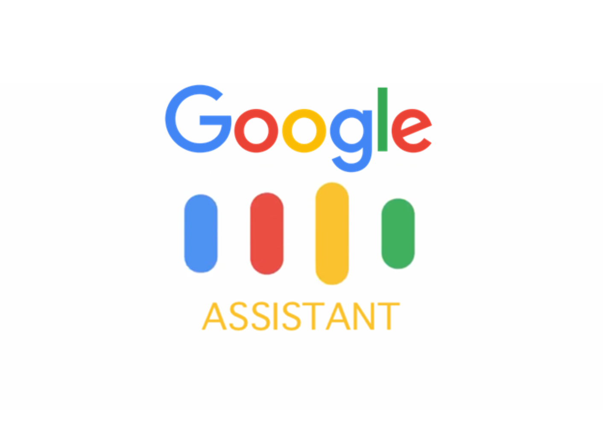
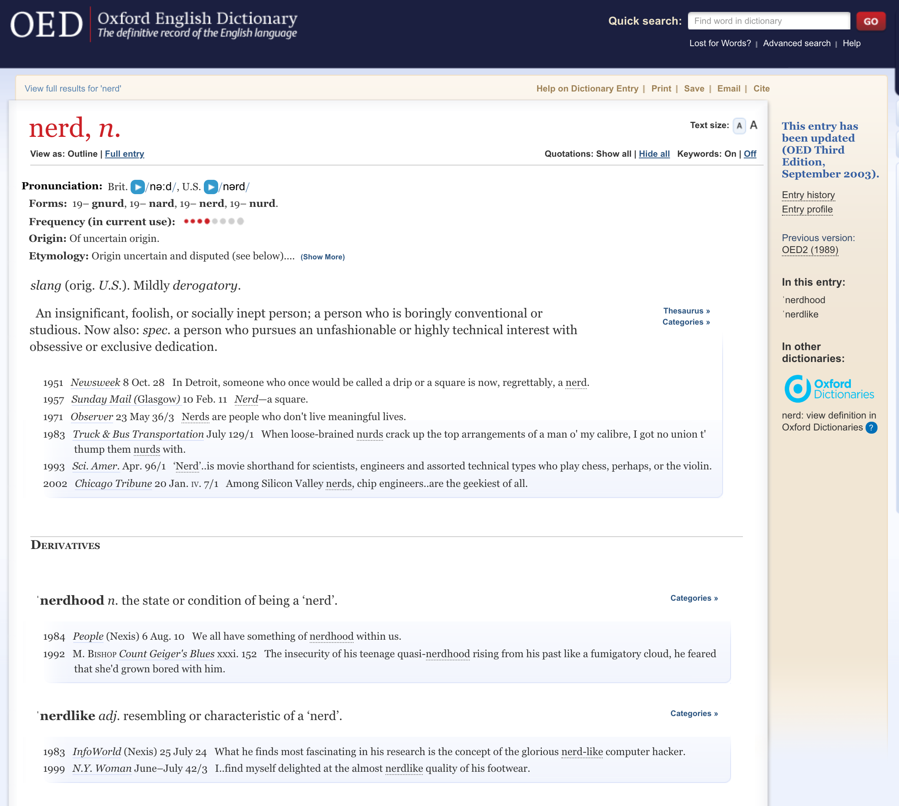

All my slides are presented using reveal.js, and do not exist as Powerpoint or PDF, but instead, as websites.
(Please note that PDF/printing is not ‘officially supported’ by the instructor, and the results may be very strange in places. Sorry!)
Introductions
What is this course about?
How will we teach it?
What is Linguistics?
Why do we care?
Linguist, nerd for all things language and horror, and your instructor!
Olivia, your instructional assistant and section leader
Test page!

Hugo, also your instructional assistant and section leader

Special thanks to Will Styler, whose teaching and content has created much of this lecture! Used with his permission

We’ll talk about what Language is
We’ll talk about different aspects of languages
We’ll talk about the subfields which tackle different problems in Language
We’ll talk about the various tools and techniques that Linguists use
We’ll look at actual language data to get a sense of just how complicated all this is
We’ll have lots of fun* in the process
Here, we’ll talk about concepts and address questions
In section, you’ll dive deep with language data
Please attend your designated section
If you’d like to try and attend a different section, email that section’s IA
Office hours are your home to clarify concepts
Five homeworks
A Final Exam (held in this room, ideally!)
WebClicker questions
Register using the course code on the syllabus
You can click in with any web-attached device
One Answer
Another
A third
The answer is D
I’m not paying attention.
One Answer
Another
A third
I’m not paying attention.
Within the first two weeks
By the end of the quarter
When I’m freaking out about my grade at the end of the quarter
I won’t tell him, then pretend I did when it’s an issue at the end of the quarter
By the end of the quarter
When I’m freaking out about my grade at the end of the quarter
I won’t tell him, then pretend I did when it’s an issue at the end of the quarter
You’ll probably want to take notes
Don’t write down the words I say, write down the ideas
Summarize in your own words
Slides are available on the syllabus
Write down questions you have during the lecture
We as a species are awful at multitasking
Masks are welcomed, but not required.
Here’s hoping it stays that way
Come to class healthy and prepared
You have no excuse to come to class sick!
‘Blow off’ the class, or try to lawyer or cajole your way into an A, and you’ll find much no sympathy nor help
Put in the effort for us, and we’ll put in effort for you
If you’re struggling, talk to us ASAP
Many linguists speak more than one language, but…
We’re interested in how ‘Language’ works for humans
Learning languages can be a part of that, but it’s not the whole!
… but we have a problem …

How did I make that sequence of sounds and how did you recognize it?
Why is there a [t] at the end of quack rather than a [d]?
What does that last sound mean anyways?
Who quacked at whom? When? How do we know?
What was gleeful?
Is the duck single? Happy?
What’s a ‘bae’ anyways? Can a duck have a bae?
You’ll get the chance to help me in future homework assignments

We’ll look at many of the central subfields of Linguistics
We’ll examine other questions that we linguists are also interested in.
“How does talking work?” - Phonetics
“How do sounds change when we combine them?” - Phonology
“How do we build words?” - Morphology
“How do we combine words into sentences?” - Syntax
“What does it all mean?” - Semantics and Pragmatics
“How do I have better grammar and be more articulate?”
“How does Poetry work? Why do some sentences sound more beautiful?”
“How do I learn languages more quickly and effectively?”
“What’s the process of becoming a good English-to-Japanese translator?”
“How does French, or Spanish, or Russian, or Wichita work?”
So, that’s what we’re doing here
Every linguist has their own
… and you’ll have your own
… when you become a linguist

Because Linguists do interesting things
Because Language is AWESOME
How can we describe how people communicate?
How can we describe the things people don’t do?
What are the best models to help us understand language?
What are the best models which mirror our own cognition?
How does language change over time?
How do languages generally accomplish communicative goals?
Are there patterns across the world?
What kinds of things are languages more and less likely to do?
Are there universal tendencies in language?


| ### Electromagnetic Articulography (EMA) |
 |

| ### Electromagnetic Articulography (EMA) |
|---|
| ### Ultrasound |
 |


Electroencephalography (EEG)
fMRI
Magnetoencephalography (MEG)
Language documentation includes sign languages!




“Write me a short reveal.js slide for an intro to linguistics class containing at least three puns”
Welcome to the study of language, where syntax isn’t a tax on sin, and semantics is meaningful. Let’s phon-etic-ally break it down!
Because language rules, and we’re here to rule the language!
You’ll be able to syntax your friends… no, seriously, teach them proper sentence structure!
Be the person who corrects “whom” without missing a beat. It’s all relative!
Phonology: It’s all about sound… like music to your ears, except we analyze it.
Syntax: Let’s get in formation! Word formation, that is.
Semantics: It’s not what you say, it’s what you mean—unless you’re a pun, then it’s both.
Automatic Summarization
Information extraction and Question Answering
Ad targeting
Sentiment Analysis
Pattern recognition
Keyword/Concept Mention Detection
Emergency call Analysis
Authorship attribution
Social Media
Ransom demands
Suicide letters
Shakespeare
Voice identification
‘Voiceprint ID’
The Bin Laden Tapes
Trademarks

Creating and developing new languages for fun or for film
Examples are Dothraki, High Valyrian, Nav’i, Languages from Dune
Prominent conlangers are David J Peterson and Jessie Sams
Take LIGN 5 for more conlanging!

(You have free access to the Unabridged Oxford English Dictionary on campus!)
… but the best reason to care about linguistics is that …


|
西施死时四十四 十四是十四 四十是四十 十四不是四十 四十不是十四。 |
Xi shi si shi si shi si Shi si shi shi si Si shi shi si shi Shi si bu shi si shi Si shi bu shi shi si. |
/ɕi ʂi si ʂi si ʂi si ʂi si ʂi ʂi si si ʂi ʂi si ʂi ʂi si bu ʂi si ʂi si ʂi bu ʂi ʂi si./ |
Xi Shi died in 44. Fourteen is fourteen. Forty is forty. Fourteen is not forty. Forty is not fourteen.
‘Strengths’ (/stɹɛŋkθs/)
‘Glance’ - взгляд /vzglʲat/)
‘Of Construction’ - строительств (/strʌˈʲitʲɛlʲstf/)
Strč prst skrz krk
‘Stick your finger down your throat’
We’re familiar with this!
… but even ‘spoken’ language involves gesture and visual cues!
Like this!
Not all languages have writing systems
Some different languages use the same writing system
Some people can only understand each other in writing

Braille is a touch-based writing system for English
ProTactile is an emerging language designed to be used by folks who are both Deaf and Blind.
Other forms of communication which rely on touch exist!
Three cats robbed the shopping mall.
Three cat-s rob-ed the shop-ing mall
Ti’i haskwákiyakirikickichis
(‘Until there was just a little trickle of water’)
Kiyakiicíwa:cé:hirʔasʔirhawi
(‘There was the big buffalo lying there.’)
‘Sisu’
‘Mamihlapinatapai’
“a look shared by two people, each wishing that the other will
offer something that they both desire but are unwilling to suggest or
offer themselves.”
‘gel-di’ “He came”
‘gel-miş’ “He came, to the best of my knowledge”

We can talk about any words, even new words, being grammatical or not
We know when any language that we use is being used properly
Words have legitimate and ‘correct’ meanings, even if they’re not in the dictionary
The -ussy suffix (e.g. bussy, pizzussy) was the American Dialect Society’s 2022 ‘Word of the Year’
All language is language!
That’s why we care.